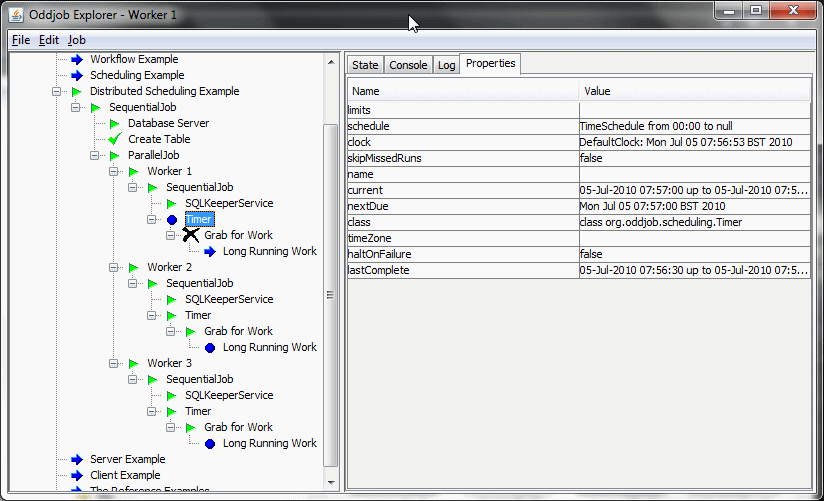

Sharing the load.
Oddjob can share work between any number of servers and so long as one server remains operational, any of the others can fail, and work will still be done.
Sharing work is achieved by having jobs grab for work. A Keeper guards the work and ensures only one job does the guarded bit of work.
A instance of work that can be grabbed is identified by a key and an instance id. The key identifies the work such as 'Report-26' and the instance is the instance of execution of the work such as the date it's running for.
The grabbers also have an identifier. This allows the grabber to keep track of who's won. The loosing grabbers display who's won so you know from any server where the work is being done. The keeper also notifies the looses when the winner has finished the job.
Now the Keeper must have some central thing on which to coordinate work. Currently the only implemented Keeper is one that uses a database, but the concept is simple and open to clever developers to implement with distributed caching or JMS or any other technology that supports the distributed ordering of things.
Here's a simple example where two parallel processes compete for work. This example uses a sequence number to differentiate between work instances. The sequence number of parallel job must be manually re-run to grab again. Re-running the parallel job or one of the grabbers demonstrates how the keeper guards against work being re-done.
<oddjob>
<job>
<sequential>
<jobs>
<variables id="vars">
<connection>
<connection driver="org.hsqldb.jdbcDriver" url="jdbc:hsqldb:mem:test" username="sa"/>
</connection>
</variables>
<sql>
<connection>
<value value="${vars.connection}"/>
</connection>
<input>
<buffer>CREATE TABLE oddjob_grabbable(key VARCHAR(128),
instance VARCHAR(128),
winner VARCHAR(32),
complete boolean,
CONSTRAINT oddjob_pk PRIMARY KEY (key, instance))</buffer>
</input>
</sql>
<sql-keeper-service id="keeper-service">
<connection>
<value value="${vars.connection}"/>
</connection>
</sql-keeper-service>
<sequence id="sequence"/>
<parallel id="grabbers">
<jobs>
<grab id="grabber1" identifier="grabber-1">
<instance>
<value value="${sequence.current}"/>
</instance>
<job>
<echo id="echo1">Grabbed By 1</echo>
</job>
<keeper>
<value value="${keeper-service.keeper(simple)}"/>
</keeper>
</grab>
<grab id="grabber2" identifier="grabber-2">
<instance>
<value value="${sequence.current}"/>
</instance>
<job>
<echo id="echo2">Grabbed By 2</echo>
</job>
<keeper>
<value value="${keeper-service.keeper(simple)}"/>
</keeper>
</grab>
</jobs>
</parallel>
</jobs>
</sequential>
</job>
</oddjob>
Grabbing for work and Oddjobs existing scheduling can be used together to implement distributed scheduling.
The Resiliance Example shows how three Oddjobs running the same timer configuration compete for work and there-by distribute the scheduling between them.
The work takes 15 seconds, and the schedule is every 10 seconds. To keep
up with the work at least 2 workers need to be running. With 3 workers
running, 1 worker is always idle. The Grab Job's onLoosing
property is set to INCOMPLETE so we can easily see which job this is.